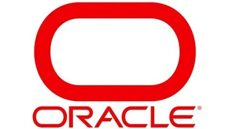

Frontend
- HTML5
- CSS3
- JavaScript
- Responsive Web Design
- Principios de UI/UX
Full Stack Developer con enfoque en ingeniería de software, arquitectura web, integración de APIs y desarrollo de aplicaciones preparadas para entornos de escala empresarial. Mi perfil está orientado a contribuir en equipos globales de tecnología que construyen productos innovadores y de alcance internacional.
Sobre mí
Soy Full Stack Developer con un perfil orientado al desarrollo de software para productos digitales de alto impacto. Mi experiencia se enfoca en construir aplicaciones web completas que integran frontend, backend, APIs y manejo de datos con una visión de escalabilidad, rendimiento y mantenibilidad.
Mi perfil profesional está alineado con los estándares que demandan empresas tecnológicas globales, especialmente en áreas como desarrollo web moderno, arquitectura de aplicaciones, integración de servicios cloud y trabajo colaborativo en equipos multidisciplinarios.
Además de mi base técnica, he orientado mi crecimiento hacia certificaciones estratégicas en plataformas como Microsoft Azure, AWS, Google Cloud y Oracle, fortaleciendo una proyección profesional apta para roles de ingeniería de software en compañías multinacionales. Hablo español y cuento con un nivel intermedio de inglés para colaborar en contextos internacionales.
HablemosCompetencias
Certificaciones
Desarrollo de soluciones cloud completas en Microsoft Azure, incluyendo aplicaciones web, APIs y servicios escalables.
Desarrollo, despliegue y mantenimiento de aplicaciones basadas en servicios cloud de Amazon Web Services.
Implementación de aplicaciones, gestión de infraestructura y monitoreo de soluciones en Google Cloud.

Desarrollo de aplicaciones empresariales utilizando tecnologías Java y arquitecturas escalables.
Portafolio
Plataforma web diseñada para la gestión de proyectos, colaboración en equipos y seguimiento de tareas en tiempo real. Incluye autenticación de usuarios, administración de proyectos, asignación de responsabilidades y paneles de productividad.
HTML5, CSS3, JavaScript, Node.js, REST APIs, SQL, Git/GitHub
Ver proyectoAplicación web orientada al análisis de datos empresariales mediante dashboards interactivos, integración de múltiples fuentes de información y presentación clara de indicadores estratégicos para facilitar la toma de decisiones.
HTML5, CSS3, JavaScript, APIs REST, SQL, visualización de datos
Ver proyectoServicios
Construcción de aplicaciones web completas que integran frontend, backend y bases de datos.
Conexión de aplicaciones con servicios externos para ampliar funcionalidades e interoperabilidad.
Diseño de estructuras de software preparadas para crecer, mantenerse y optimizarse.
Desarrollo de experiencias web modernas, adaptables y centradas en el usuario.
Organización y modelado de información para aplicaciones confiables y eficientes.
Mejora continua del rendimiento, la calidad del código y la estabilidad de aplicaciones web.
Educación
Ingeniería en Sistemas de Información
Formación orientada al desarrollo de software, arquitectura de sistemas y soluciones tecnológicas.Preparación orientada a empresas globales
Enfoque en desarrollo Full Stack, colaboración multidisciplinaria, productos escalables y aprendizaje continuo.Contacto
Español (nativo) / Inglés (intermedio)
Remote / International